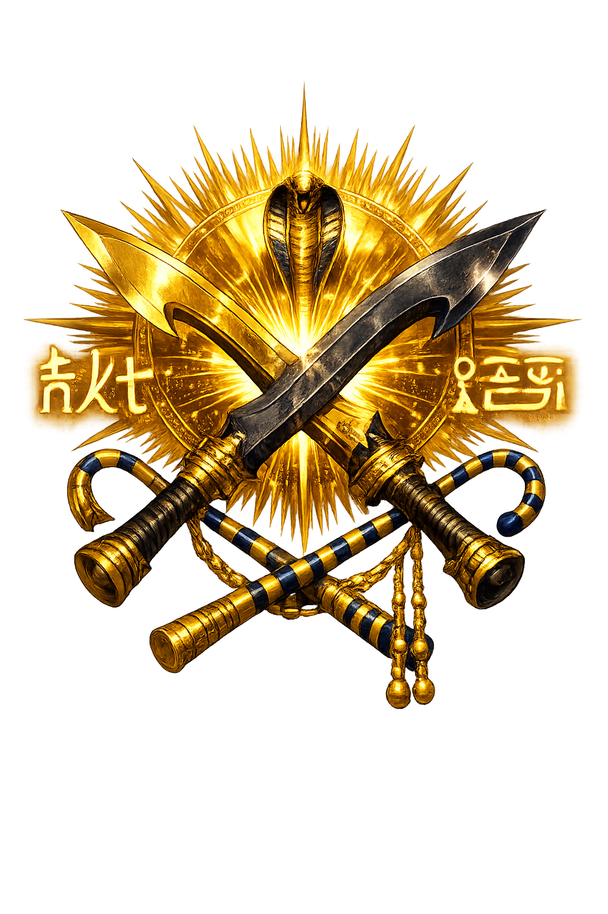

Unicode restoration and ASCII comparison
𓈖𓎛𓏏
The name in its original Egyptian form. Nḫt (𓈖𓎛𓏏) is attested in the source tradition — “Strong, mighty, victorious”. Its original diacritics and script distinctions carry the full phonetic and orthographic weight of the source tradition.
nekhet
Reduced to plain nekhet, the name loses everything that made it specific: original diacritics and script distinctions. What remains is an ASCII string that machines can parse but that no longer speaks with its original voice.
Nḫt
The Unicode restoration recovers what ASCII flattened. Nḫt restores original diacritics and script distinctions, returning the name to its original written dignity. The domain encodes to Punycode, but the browser displays the truth.
Nḫt.com → xn--nt-bvs.com
The non-ASCII characters in Nḫt are encoded while the ASCII remains visible. To the DNS, it is Punycode. To humanity, it is Nḫt.
How Nḫt travels from ancient script to the modern URL
Egyptian nḫt “strong, mighty, victorious"; an adjective of power common in royal and divine epithets.
Strength, Victory
The Unicode restoration Nḫt uses Egyptological characters registrable in .com; hieroglyphs are outside the .com IDN table.
How Nḫt was spoken
Strength, Might, and the King's Arm
Nḫt is not a god with a temple in every nome; it is a power that runs through every god and every king. The Egyptian root means 'strong,' 'mighty,' 'victorious' — the quality that bends bows, breaks enemies, and endures the weight of stone. Personified, Nḫt is the arm behind the spear, the backbone of the obelisk, the hidden muscle of maat.
From the Pyramid Texts to the battle reliefs of Ramesses, nḫt is the word that turns a mortal into a conqueror and a pharaoh into a force of nature. It belongs to Horus in the contending, to Montu in the chariot, and to Amun when his name itself becomes a weapon.
Royal epithets praise the king as nḫt ḫpš, 'mighty of arm,' the physical guarantee of victory.
The root names triumph over Egypt's enemies and the overcoming of chaos.
Nḫt describes monuments and laws that outlast generations; might becomes permanence.
Gods grant nḫt to the king through ritual, oracle, and the anointing of power.
Stories of Nḫt
Nḫt has no continuous myth of its own; instead, it threads through the myths of others as the strength that makes them possible. It is the unnamed protagonist of Egyptian royal ideology.
In the Pyramid Texts, the dead king is made nḫt so that he may ascend to the sky, row with the gods, and stride among the stars. Utterances call upon Horus to give the king his arm, Seth to give him his strength, and Thoth to make his limbs mighty. Nḫt is the kinetic energy of resurrection.
The Contendings of Horus and Seth is a contest not only of legitimacy but of nḫt. Each god must prove himself stronger, more cunning, more enduring. Horus's final victory is confirmed when the gods recognize that his arm — his nḫt — is fit to wield the harpoon and rule the Two Lands.
The war-god Montu of Thebes embodies nḫt in battle. Inscriptions of Thutmose III and Ramesses II credit Montu with lending them strength; the king becomes the god's arm, and the god becomes the king's might.
In New Kingdom hymns, Amun is praised as nḫt n rwḏw, 'mighty of strengths,' the hidden source of all power. The abstract noun becomes a divine predicate: to be strong is to participate in Amun.
Nḫt is the least theatrical of Egypt's powers. It does not roar like Sekhmet or weep like Isis; it simply holds. The arm that draws the bow, the legs that march, the will that keeps building when the flood recedes — this is nḫt. It is strength not as display but as persistence.
Enter Extended Lore